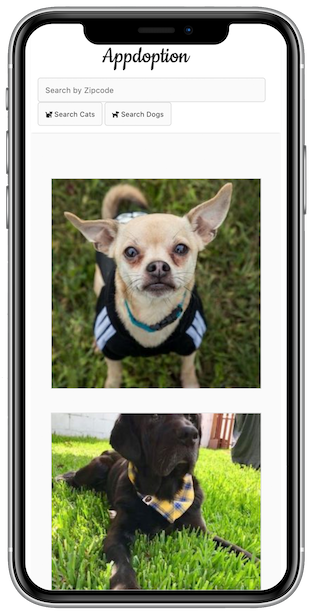
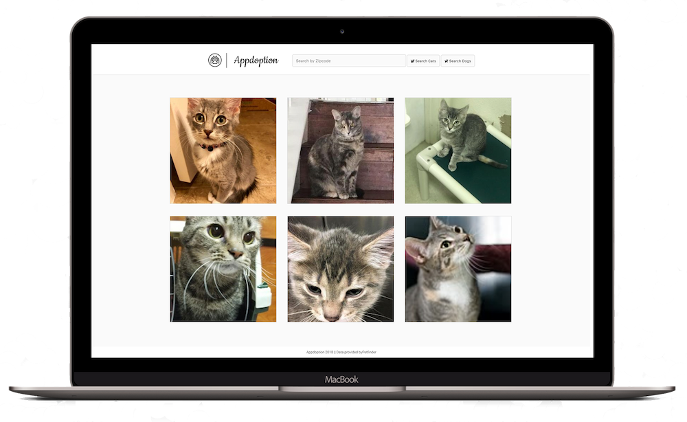

Hi! I'm Amy!
I'm a developer, tech enthusiast, and cat mom living in Chicago, IL
I'm a developer, tech enthusiast, and cat mom living in Chicago, IL
HTML
CSS
Bootstrap
Materialize
Javascript
jQuery
React
Node JS
NPM
Express
Github
Git
Adobe Photoshop
Adobe Illustrator

Web Development Coding Bootcamp
July 2018 - October 2018

Bachelor of Arts, History
2011-2015
Metropolis Coffee Co
Shift Leader
2016-2018
ExpressJet Airlines
Flight Attendant
2010 - 2015
A front-end, photos focused application for searching adoptable pets in your area.
This application was created with the usability of Instagram in mind and connects with the Petfinder API.
Completed as my first project for web development bootcamp, my role on this project was as
project manager and UI/UX design and development. For this project I chose to learn the Materialize CSS
framework, which ultimately led me to a much better grasp of responsiveness and CSS gridding to achieve
the desired layout.

Upon completion of bootcamp this was the first project I wanted to revisit. I spent additional time improving the UI to be more heavily similar to Instagram, as a large portion of our feedback was that given the goals of the project, the instruction team wanted to see it look and feel more like Instagram. With more time and fewer hard requirements, I was also able to improve upon the useage of the api and add an initial display of random results, so that the user could see what sort of content would be displayed once a search was conducted. Each step of the way I ensured that Appdoption would function just as easily on mobile as it does on desktop. I am very proud of Appdoption Version 2.